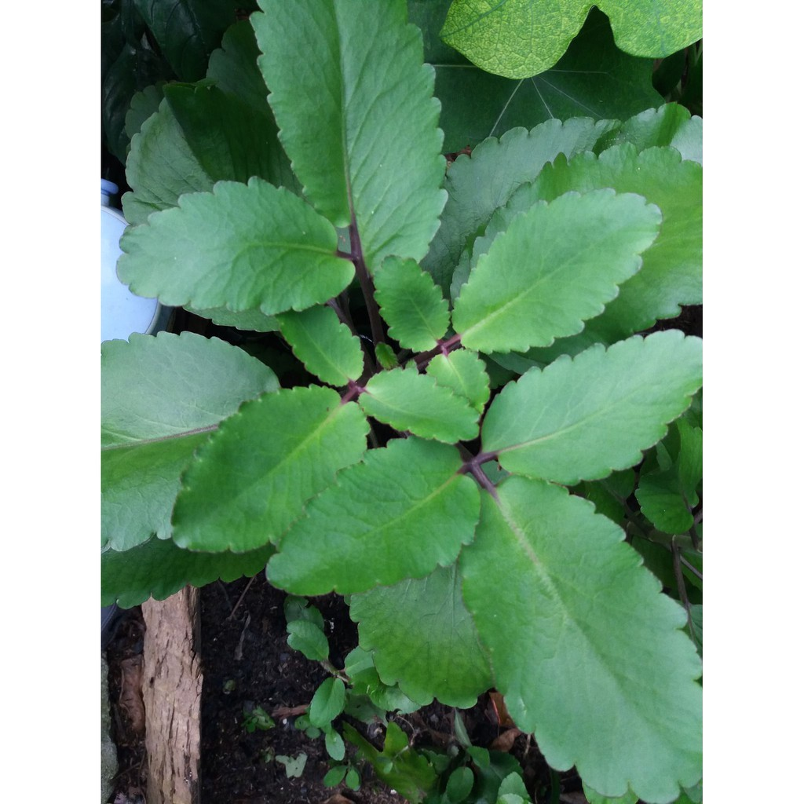

Basonym of Drug
Twak
Main Synonym
- Twakpatra
- Varanga
- Bhrunga
- Utkata
- Twacha
- Choch
- Darusita
- Shakala
- Latapatra
- Saihala
- Ramapriya
- Tanutwak
- Kavacha
Regional Name
- Bengali: Daruchini
- Gujarati: Taja
- Hindi: Dalchini
- Punjabi: Lurundu
- Tamil: Lavangpatte
- Telugu: Dalchina Cekka Chettu
- English: Cinnamon
Botanical Name
Cinnamomum cassia Blume / Cinnamomum zeylanica Blume
Family
Lauraceae
Classification (Gana)
- Aacharya Sushruta: Eladi Gana
- Aacharya Vagbhata: Trijatka, Chaturjataka, and Eladi Gana
- Bhavaprakash Nighantu: Karpuradi Varga
External Morphology
A big tree
Useful Parts
Important Phytoconstituent
- Cinnamaldehyde
- Phellandrene
- Cymene
- Safrole
- Eugenol
- Alpha-Phellandrene
- Cinnamic Aldehyde
- Cinnacassiol
- Epicatechin
Rasa Panchak
- Rasa: Katu, Madhura, Tikta
- Guna: Tikshna, Laghu, Ruksha
- Virya: Ushna
- Vipaka: Katu
Action
Vatapittahara
Therapeutic Indication
- Pachan (Digestive)
- Ruchikara (Appetizer)
- Kasahara (Anti-cough)
- Arshoghna (Anti-haemorrhoidal)
- Pramehahara (Anti-diabetic)
- Pinasanashan (Treat Chronic Cold)
- Sukrala (Aphrodisiac)
- Balya (Strengthening)
Therapeutic Uses
- Adhman - Hot infusion of Twak is beneficial in flatulence.
- Atisara - Twak powder with bilva and rock sugar is beneficial in diarrhea.
- Kasa - Twak powder with ela, pippali, tugakshiri, and sugar is useful to treat cough.
Dose
1-3 gm, Oil: 2-5 drops
Formulations
- Trijataka Churna
- Chaturjataka Churna
- Sitopaladi Churna
- Eladi Rasayana
- Samasharkara Churna
Adverse Effect
Not Known